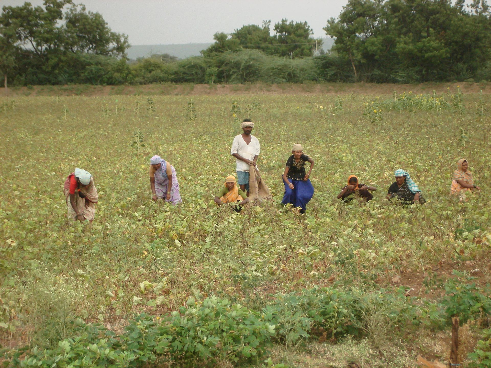
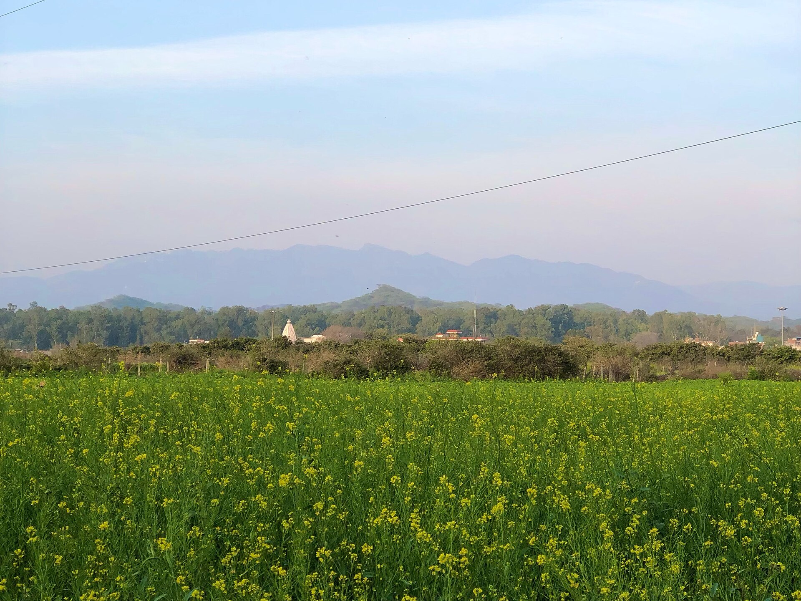
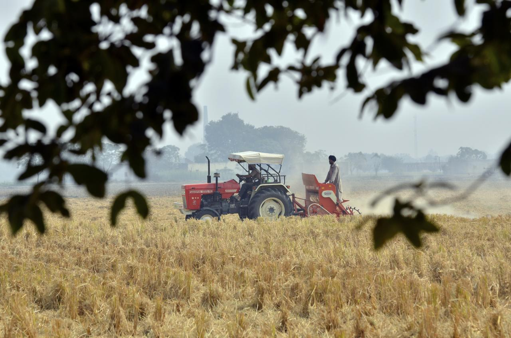
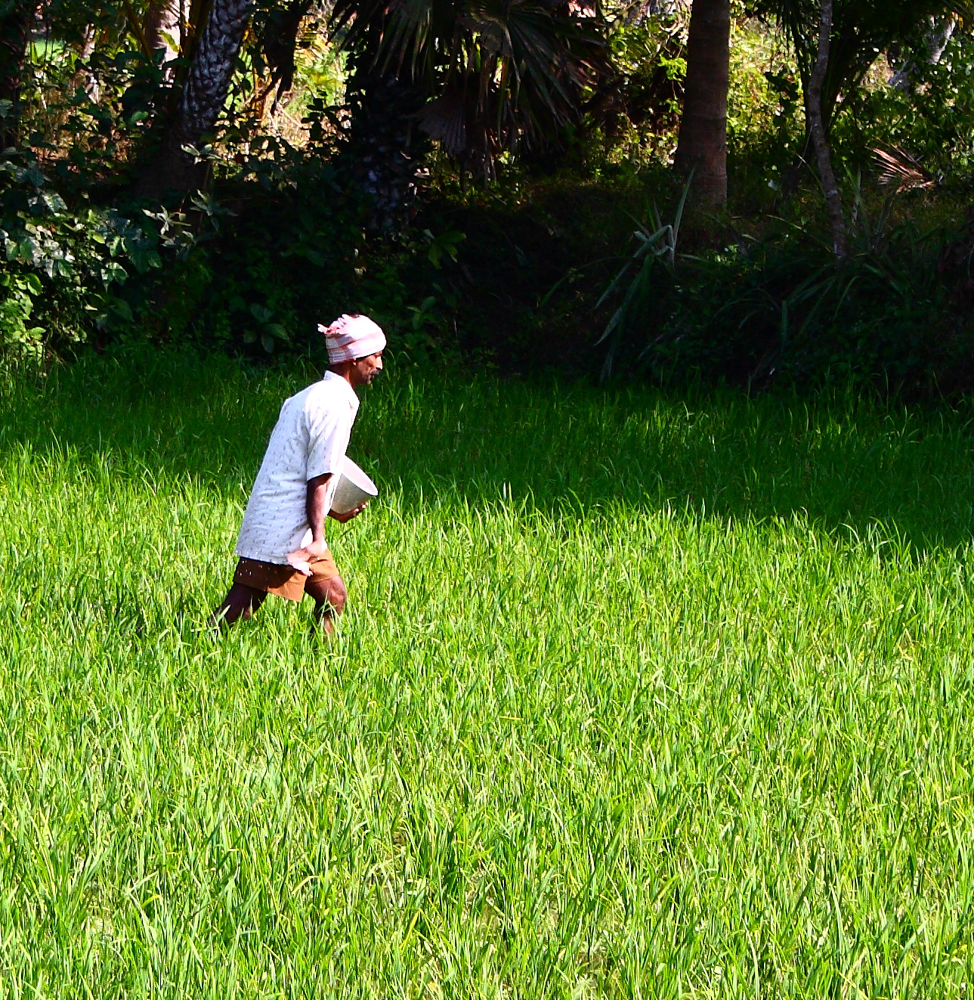

Kisan Call Centre · voice-first query triage
KCC-Sahayak listens to a farmer's query in English, Hinglish or Hindi, works out what is being asked, finds the closest verified answer from past Kisan Call Centre resolutions, and decides — transparently — whether to answer at once or hand the call to a real Farm Tele Advisor.
Live demo
Speak, or type in English, Hinglish or Devanagari Hindi. Every stage below is the real pipeline running on this machine — the result is logged, and anything escalated lands in the Advisor Console.
Tap the microphone to speak
Tighten the thresholds to auto-answer less but more safely. This is the accuracy-vs-automation trade-off the project is built around. High-stakes categories always escalate regardless.
This query is now waiting in the Advisor Console. When an advisor answers it, the answer is added to the system's memory.
Asking Gemini…
Queries you run will appear here.
Human in the loop
Escalated queries wait here for a Farm Tele Advisor. Each answer is returned to the farmer and added to the retrieval memory, so a similar question later finds a verified answer first.
Nothing is waiting. Run a high-stakes query in the demo (for example a pest or fertiliser question) to see one appear.
No resolved queries yet.
Operations
Live figures from the query log on this machine — not the offline evaluation. Run a few demo queries and watch them move.
Evaluation
An earlier version of this project reported 99% accuracy. That number measured agreement with a keyword rule, not understanding. This page shows what changed once the labels, the test sets and the baselines were done properly.
Silver = held-out corpus queries labelled by meaning. Gold = 150 independently written queries (50 English, 50 Hinglish, 50 Hindi). “Hinglish*” re-spells every Hinglish query at random to test that a model isn't just memorising spellings.
System design
Unlike earlier KCC-NLP systems that start from already-typed text and always answer, KCC-Sahayak starts from speech and treats “should we answer at all?” as a first-class decision.
Whisper transcribes the call. Tested on synthetic speech only — see Evaluation.
A multilingual sentence encoder plus a calibrated classifier assigns one of 10 KCC query types. Hindi works through the encoder's cross-lingual alignment.
A crop and pest glossary tags what the farmer mentions.
Dense and TF-IDF search over ~125,000 logged Q/A pairs, plus every answer a human advisor has given since.
Auto-answers only if the category is low-risk, confidence and similarity clear their thresholds, and the answer text contains no dosage or chemical advice. Otherwise: a human.



About the project
The Kisan Call Centre has answered every farmer query through a live human advisor since 2004. KCC-Sahayak is a triage layer, not a replacement: it automates the routine, low-risk questions and routes everything else to a person.
Differs from KisanQRS (text-only, always answers), AgriLLM (generative, no safety gate) and KrushiMitra (classical ML), and applies the reject-option framing of Chow (1970) and Geifman & El-Yaniv (2017) to a live helpline.